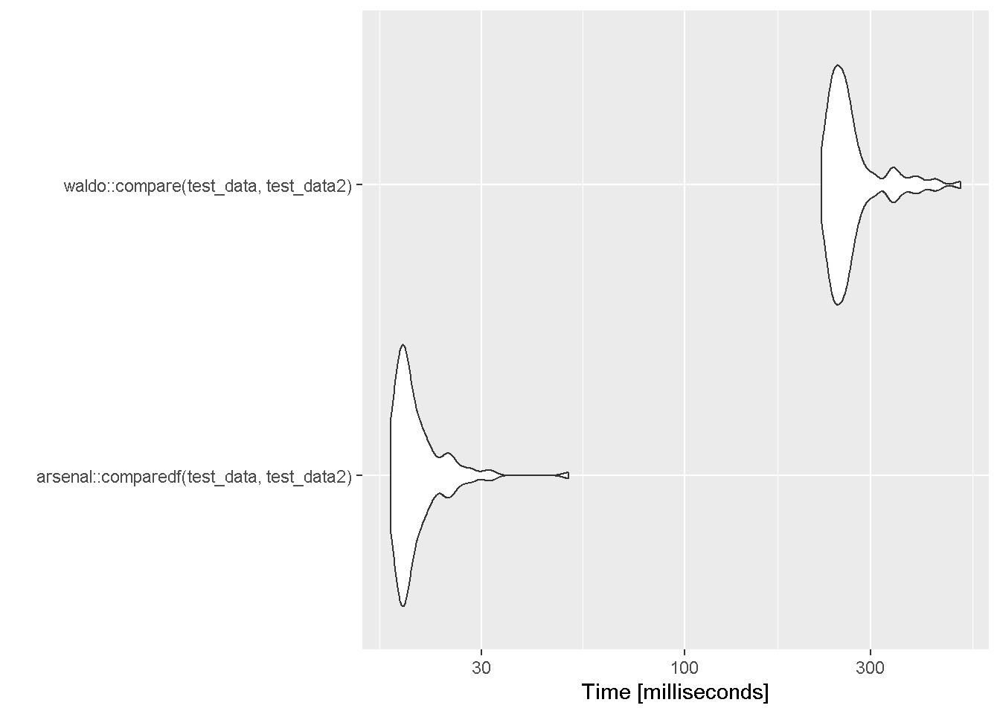

Code
library(tidyverse)ダブルプログラミングにおいて、データ (data.frame や tibble) を比較する際に便利な R パッケージを紹介する。
R パッケージを紹介する前に、製薬業界の標準ソフトウェアである SAS の PROC COMPARE に触れておく。
PROC COMPARE では 2つのデータセットを比較し「一致した列の名前、どこに異なる値があるか」等が output に示される。
また数値については、tolerance (データ間で値に差異がある場合、それを許容するか否か) が設定できる。tolerance を考慮する状況の一例として、浮動小数点の差が挙げられる。

tidyverse を読み込んでおく。
library(tidyverse)またダミーデータとして、diffdf パッケージの vignette で用いられる test_data を流用する。
LENGTH = 30
set.seed(12334)
test_data <- tibble::tibble(
ID = 1:LENGTH,
GROUP1 = rep(c(1,2), each = LENGTH/2),
GROUP2 = rep(c(1:(LENGTH/2)), 2 ),
INTEGER = rpois(LENGTH, 40),
BINARY = sample( c("M" , "F") , LENGTH , replace = T),
DATE = lubridate::ymd("2000-01-01") + rnorm(LENGTH, 0, 7000),
DATETIME = lubridate::ymd_hms("2000-01-01 00:00:00") + rnorm(LENGTH, 0, 200000000),
CONTINUOUS = rnorm(LENGTH, 30, 12),
CATEGORICAL = factor(sample(c("A", "B", "C"),LENGTH, replace = T)),
LOGICAL = sample(c(TRUE, FALSE), LENGTH, replace = T),
CHARACTER = stringi::stri_rand_strings(LENGTH, rpois(LENGTH, 13), pattern = "[ A-Za-z0-9]")
)
test_data %>%
head(3)| ID | GROUP1 | GROUP2 | INTEGER | BINARY | DATE | DATETIME | CONTINUOUS | CATEGORICAL | LOGICAL | CHARACTER |
|---|---|---|---|---|---|---|---|---|---|---|
| 1 | 1 | 1 | 41 | F | 2003-06-22 | 2000-11-28 20:40:53 | 21.62687 | C | TRUE | 8ZzIvMYithb |
| 2 | 1 | 2 | 41 | M | 2016-12-03 | 1994-08-30 19:05:02 | 26.47256 | A | TRUE | nzPt6P3xRXmL |
| 3 | 1 | 3 | 41 | M | 2016-05-08 | 1992-09-11 11:30:18 | 16.12255 | B | TRUE | 1IF8w3zWsix |
更に、比較用として一部が異なる test_data2 を作成する。
test_data2 <- test_data %>%
select(!DATE) %>%
slice(1:(n() - 2)) %>%
mutate(GROUP1 = as.character(GROUP1)) %>%
mutate(CATEGORICAL = fct_recode(CATEGORICAL, `1` = "A", `2` = "B", `3` = "C"))
test_data2[5,2] <- "6"
test_data2 %>%
head(3)| ID | GROUP1 | GROUP2 | INTEGER | BINARY | DATETIME | CONTINUOUS | CATEGORICAL | LOGICAL | CHARACTER |
|---|---|---|---|---|---|---|---|---|---|
| 1 | 1 | 1 | 41 | F | 2000-11-28 20:40:53 | 21.62687 | 3 | TRUE | 8ZzIvMYithb |
| 2 | 1 | 2 | 41 | M | 1994-08-30 19:05:02 | 26.47256 | 1 | TRUE | nzPt6P3xRXmL |
| 3 | 1 | 3 | 41 | M | 1992-09-11 11:30:18 | 16.12255 | 2 | TRUE | 1IF8w3zWsix |
Base R の関数でもオブジェクトの比較自体は可能である。
しかし同一か否かを返すのみで、最終確認にしか使えない。
all.equal()test_data %>%
all.equal(test_data2) %>%
isTRUE()[1] FALSEidentical()test_data %>%
identical(test_data2)[1] FALSEdplyr::all_equal()異なる列、行があるかを教えてくれる。Base R の関数よりは情報量が増えたが、まだ不足している。
test_data %>%
all_equal(test_data2)Different number of columns: 11 vs 10.Mayo Clinic 謹製、SAS にインスパイアされたパッケージである。
arsenal::comparedf()単に2つのデータを渡せば比較してくれる。
summary() を使うと、SAS っぽい丁寧な結果が出力される。
tolerance に関しては SAS と同様 Numeric に対応の他、Logical, Factor, Character, Date といった型に対応し、ユーザ定義の tolerance も設定可能である。
library(arsenal)
test_data %>%
comparedf(test_data2) %>%
summary()
Table: Summary of data.frames
version arg ncol nrow
-------- ----------- ----- -----
x . 11 30
y test_data2 10 28
Table: Summary of overall comparison
statistic value
------------------------------------------------------------ ------
Number of by-variables 0
Number of non-by variables in common 10
Number of variables compared 9
Number of variables in x but not y 1
Number of variables in y but not x 0
Number of variables compared with some values unequal 1
Number of variables compared with all values equal 8
Number of observations in common 28
Number of observations in x but not y 2
Number of observations in y but not x 0
Number of observations with some compared variables unequal 28
Number of observations with all compared variables equal 0
Number of values unequal 28
Table: Variables not shared
version variable position class
-------- --------- --------- ------
x DATE 6 Date
Table: Other variables not compared
var.x pos.x class.x var.y pos.y class.y
------- ------ -------- ------- ------ ----------
GROUP1 2 numeric GROUP1 2 character
Table: Observations not shared
version ..row.names.. observation
-------- -------------- ------------
x 29 29
x 30 30
Table: Differences detected by variable
var.x var.y n NAs
------------ ------------ --- ----
ID ID 0 0
GROUP2 GROUP2 0 0
INTEGER INTEGER 0 0
BINARY BINARY 0 0
DATETIME DATETIME 0 0
CONTINUOUS CONTINUOUS 0 0
CATEGORICAL CATEGORICAL 28 0
LOGICAL LOGICAL 0 0
CHARACTER CHARACTER 0 0
Table: Differences detected (18 not shown)
var.x var.y ..row.names.. values.x values.y row.x row.y
------------ ------------ -------------- --------- --------- ------ ------
CATEGORICAL CATEGORICAL 1 C 3 1 1
CATEGORICAL CATEGORICAL 2 A 1 2 2
CATEGORICAL CATEGORICAL 3 B 2 3 3
CATEGORICAL CATEGORICAL 4 A 1 4 4
CATEGORICAL CATEGORICAL 5 B 2 5 5
CATEGORICAL CATEGORICAL 6 C 3 6 6
CATEGORICAL CATEGORICAL 7 C 3 7 7
CATEGORICAL CATEGORICAL 8 C 3 8 8
CATEGORICAL CATEGORICAL 9 B 2 9 9
CATEGORICAL CATEGORICAL 10 A 1 10 10
Table: Non-identical attributes
var.x var.y name
------------ ------------ -------
CATEGORICAL CATEGORICAL levels arsenal::diffs(), arsenal::n.diffs()comparedf() で作成したオブジェクトを渡して、差異を表示する関数である。
by.var 引数で列ごとに表示できる。
result_compare <- test_data %>%
comparedf(test_data2)
result_compare %>%
diffs(by.var = TRUE)| var.x | var.y | n | NAs |
|---|---|---|---|
| ID | ID | 0 | 0 |
| GROUP2 | GROUP2 | 0 | 0 |
| INTEGER | INTEGER | 0 | 0 |
| BINARY | BINARY | 0 | 0 |
| DATETIME | DATETIME | 0 | 0 |
| CONTINUOUS | CONTINUOUS | 0 | 0 |
| CATEGORICAL | CATEGORICAL | 28 | 0 |
| LOGICAL | LOGICAL | 0 | 0 |
| CHARACTER | CHARACTER | 0 | 0 |
result_compare %>%
n.diffs(by.var = TRUE)[1] 28waldo は Hadley Wickham 氏が作成したパッケージである。
waldo::compare()waldo の関数は compare() ただ一つである。arsenal と遜色ない情報量が出力される。
デフォルトでは第一引数 (x) のデータが “old”、第二引数 (y) のデータが “new”とラベリングされる。
tolerance については、数値の誤差に対応している。
library(waldo)
test_data %>%
compare(test_data2) %>%
print(n = Inf) # デフォルトでは結果が長すぎると省略される`old` is length 11
`new` is length 10
names(old) | names(new)
[3] "GROUP2" | "GROUP2" [3]
[4] "INTEGER" | "INTEGER" [4]
[5] "BINARY" | "BINARY" [5]
[6] "DATE" -
[7] "DATETIME" | "DATETIME" [6]
[8] "CONTINUOUS" | "CONTINUOUS" [7]
[9] "CATEGORICAL" | "CATEGORICAL" [8]
`attr(old, 'row.names')[26:30]`: 26 27 28 29 30
`attr(new, 'row.names')[26:28]`: 26 27 28
`old$ID[26:30]`: 26 27 28 29 30
`new$ID[26:28]`: 26 27 28
`old$GROUP1` is a double vector (1, 1, 1, 1, 1, ...)
`new$GROUP1` is a character vector ('1', '1', '1', '1', '6', ...)
`old$GROUP2[26:30]`: 11 12 13 14 15
`new$GROUP2[26:28]`: 11 12 13
`old$INTEGER[26:30]`: 37 44 47 41 41
`new$INTEGER[26:28]`: 37 44 47
`old$BINARY[26:30]`: "F" "F" "F" "F" "M"
`new$BINARY[26:28]`: "F" "F" "F"
`old$DATE` is an S3 object of class <Date>, a double vector
`new$DATE` is absent
old$DATETIME | new$DATETIME
[26] "2012-12-02 21:49:49" | "2012-12-02 21:49:49" [26]
[27] "1998-04-06 04:42:27" | "1998-04-06 04:42:27" [27]
[28] "2000-09-25 22:43:09" | "2000-09-25 22:43:09" [28]
[29] "2007-05-20 12:17:27" -
[30] "2007-12-30 19:37:24" -
old$CONTINUOUS | new$CONTINUOUS
[26] 39.2384628796271 | 39.2384628796271 [26]
[27] 48.7933346086924 | 48.7933346086924 [27]
[28] 43.2582541160317 | 43.2582541160317 [28]
[29] 37.4109086493736 -
[30] 26.7323065870016 -
`levels(old$CATEGORICAL)`: "A" "B" "C"
`levels(new$CATEGORICAL)`: "1" "2" "3"
`old$CATEGORICAL`: "C" "A" "B" "A" "B" "C" "C" "C" "B" "A" and 20 more...
`new$CATEGORICAL`: "3" "1" "2" "1" "2" "3" "3" "3" "2" "1" ...
`old$LOGICAL[26:30]`: FALSE TRUE TRUE FALSE TRUE
`new$LOGICAL[26:28]`: FALSE TRUE TRUE
old$CHARACTER | new$CHARACTER
[26] "U55ILxn56Eul" | "U55ILxn56Eul" [26]
[27] "mcKQSK0K" | "mcKQSK0K" [27]
[28] "vAAYZnijBM6Z6A" | "vAAYZnijBM6Z6A" [28]
[29] "ijFc9Mw5KIx" -
[30] "5ATsKW8MlP7hG" - 大きなデータを扱う際、実行速度は重要な要素となり得る。
ここでは、arsenal::comparedf() と waldo::compare() のベンチマークを比較した。
microbenchmark::microbenchmark(
arsenal::comparedf(test_data, test_data2),
waldo::compare(test_data, test_data2),
times = 100L) %>%
autoplot()
arsenal::comparedf() がかなり速い結果となった。
waldo::compare() の使用が推奨されている。diffdf でできることは arsenal でまかなえる。dataCompareR でできることは arsenal でまかなえる。arsenal との差別化ポイントが出てくれば検討の余地がある。,dplyr::semi_join()
arsenal::comparedf() や waldo::compare() が便利である。
arsenal のほうがオプションが豊富で、速度面でもアドバンテージを持つ。